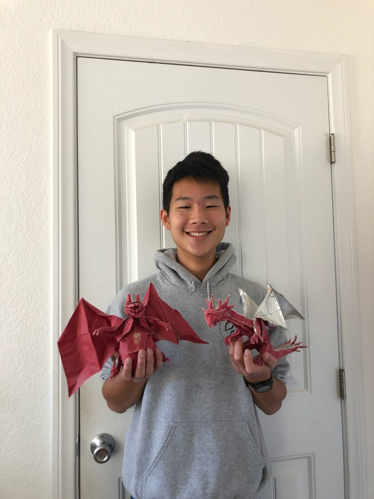

Mark Diamond | Co-President
- Year: First
- Member Since: 2019
- Major: Mechanical Engineering
- Bio:
|
Chris Tai | Co-President

- Year: First
- Member Since: 2019
- Major: Microbiology, Immunology, and Molecular Genetics
- Bio: Chris has been an avid origami folder since age 12, when he realized that homework can be
repurposed (rightfully so) into paper airplanes. A San Diego native, he is a good friend of good
weather, and really appreciates Mexican food. When Chris isn’t folding origami, you can find him
skating, running, hiking, playing board games, trying to figure out how to use Zoom, or hanging out
with members of the Asian American Christian Fellowship at UCLA.
|
Benny Lau | Vice President
- Year: Second
- Member Since: 2019
- Major: Biology
- Bio: Benny has always done origami ever since he first got introduced to it by his close cousin
when he was little. He has on and off done it since all throughout middle school and high school,
especially during class when bored. Outside origami and academics, Benny especially enjoys staying
active, such as playing sports like soccer or tennis. He deeply enjoys hiking and is now an avid
rock climber. In his free time, you can also catch him at the piano attempting to practice 40 hours
a day, skating, or spiking people in smash.
|
Andy Tseng | Community Outreach Coordinator
- Year:
- Member Since:
- Major:
- Bio:
|
Ezra Chen | Treasurer
- Year: Second
- Member Since: 2019
- Major:: English and Philosophy
- Bio: Normal children stay up deep into the night, playing games or watching videos on the Internet,
but when he himself was a child, Ezra spent his nights… playing games and watching videos on the
Internet. Though sometimes, in high school, he would stay up whittling away at some origami project or
other. Now, he stays up late into the night playing video games or procrastinating on yet another paper.
Origami is for the day time… during class. Else, one might find him playing video games or working on
some other art project or doing philosophy with an unfortunate friend or attempting and failing to come
up with the next C.S. Lewis masterpiece.
|
Jasper Sun | Photographer / Social Media
- Year: Second
- Member Since: 2019
- Major: Mechanical Engineering
- Bio: Jasper has always liked using origami to add a more personal touch when gift-giving. He enjoys
running, cooking, playing badminton, taking photos, listening to music, and flying RC helicopters.
You can also find him lurking on Summoner’s Rift.
|
Kelly Zhong | Graphic Designer
- Year: Second
- Member Since: 2020
- Major: Cognitive Science
- Bio: Kelly first started folding origami in elementary school, and had an especially huge origami
phase in middle school. Although she does not fold origami as much anymore, she has a huge
appreciation for the craft and loves to see other peoples’ creations. In her free time, Kelly loves
to do anything art-related (especially bullet journaling, painting, and calligraphy) and hanging out
with friends and family.
|
Stephanie Lo | Graphic Designer
- Year: First
- Member Since: 2020
- Major: Psychology
- Bio: When her grandma first taught her how to fold an origami crane, Stephanie fell in love with the art.
As she continued to expand her origami repertoire, she realized that giving it as a gift was much
better than keeping it for herself. Today, Steph continues to fold origami gifts for friends, family,
and peers. In her free time, she enjoys folding origami (OBVIOUSLY), chewing a TON of gum, hanging with
friends (now with 100% more Zoom), going roofing, and binging Youtube for 5 hours.
|
Nicholas Chin | Secretary
- Year:
- Member Since:
- Major:
- Bio:
|
Sally Seok | Webmaster
- Year: Second
- Member Since: 2020
- Major: Computer Science
- Bio: Sally was primarily introduced to the world of origami in her high school Chinese class and now
hopes to master the craft one day. She enjoys watching Korean dramas, travelling, and spending time
with friends and family in her free time.
|